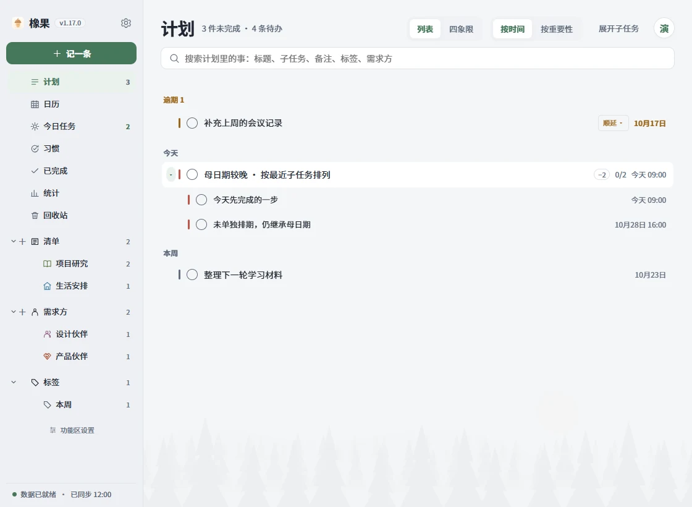
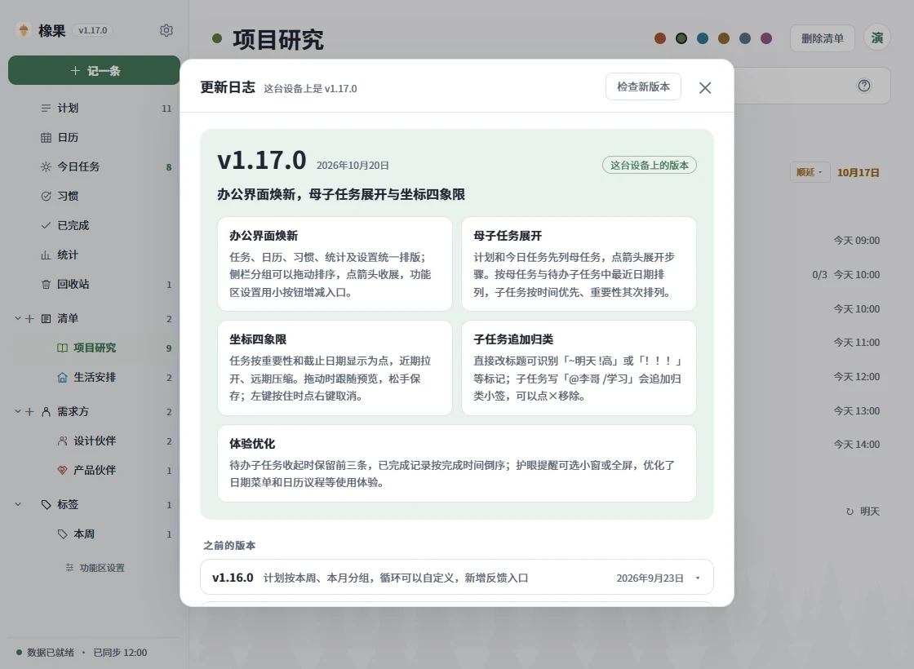
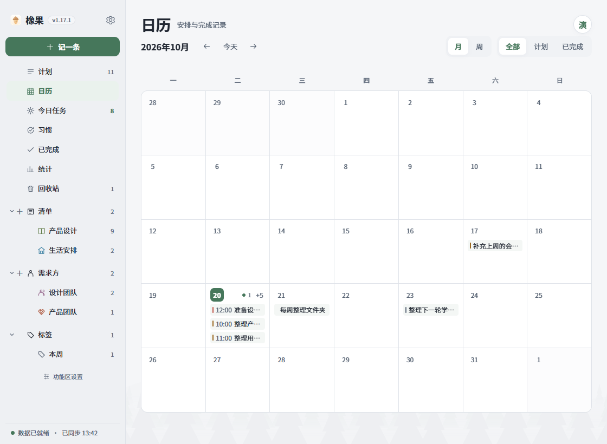
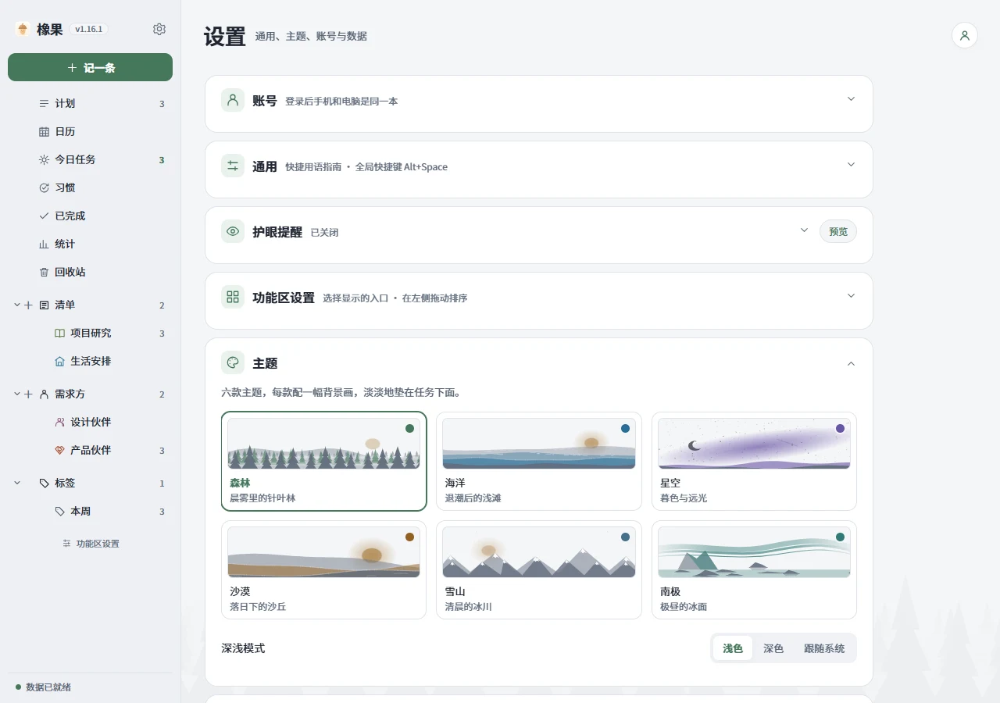
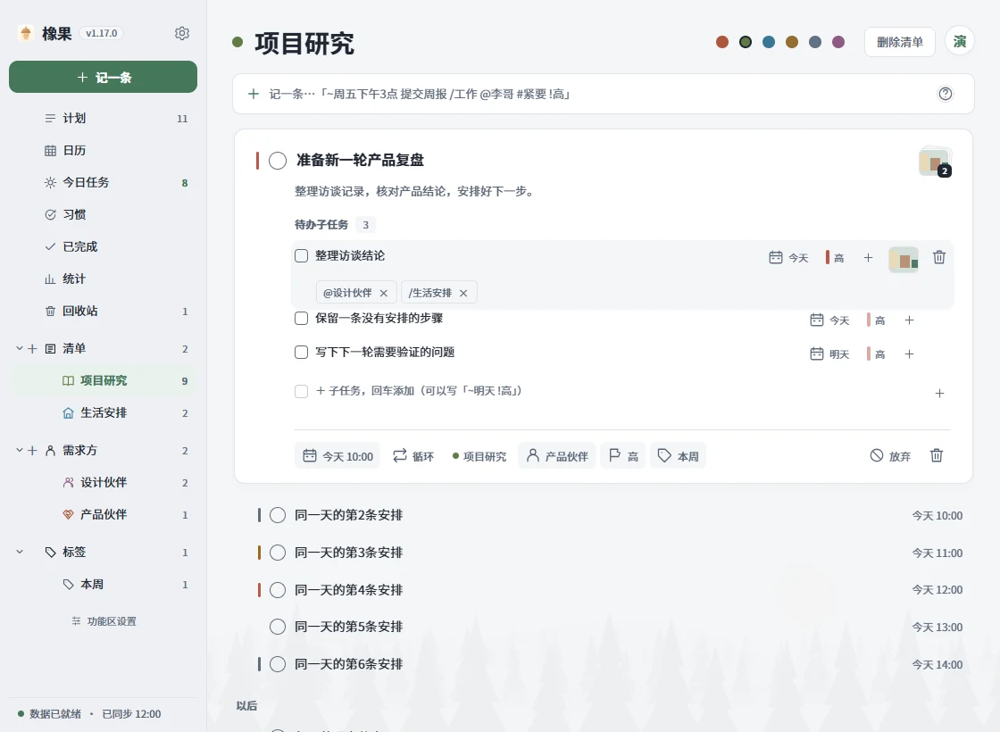

下面这些是橡果每天真正在替你干的事。
不用先选日期、再选清单、再点重要性。把话打完就行：
~明天 / ~下周三 / ~8月20日~下午3点、~每周一三五/清单 · #标签 · @需求方 · !高边打边显示解析出来的结果，不对当场改。
橡果把「为谁做」当成和日期、清单同一级的东西。侧栏按人分栏，点开某个人就是欠他的全部事情；统计里也各算各的。
如果你的事大多是别人交办的，按人看比按重要性排更管用。
喝水、背单词、健身这类重复着做的事，有自己的一屏：一个大圈点一下就是打卡，旁边是连续多少次和本周七格，点开能看整月日历。
习惯不会逾期。昨天没做就是没做，不会滚成一笔债堵在今天。忘了打卡可以补，「每周一三五」这种也数得对——连续三次数的是该做的日子，不是自然日。
今天 / 本周 / 本月 / 半年内 / 更远 / 未安排。不用在一条长列表里翻哪件是这周要交的；写「~半年内 考驾照」，日期就落在半年内那一段的最后一天。
换一个看法，就变成按重要性分成高 / 中 / 低 / 普通四段，每段里再按时间排。
电脑上的计划和今日任务先列母任务，点箭头展开待办步骤。子任务按日期、钟点排，同一时间再按重要性排。
母任务按自己与待办步骤中最近的日期排列。每一步默认显示一行，点箭头展开完整文字；长清单也可以收成前三条。
电脑上直接在标题里写「~明天 !高」，日期和重要性会即时预览，确认后保存。子任务写「@李哥 /学习」，会在末尾追加归类小签，点×移除。
要保留符号本身，把内容放进双引号，例如「“@李哥 ~明天 !!!”」，引号里的内容只当正文。
在输入框里粘贴、拖入图片，也可以点子任务旁的小加号选图。收起时显示一枚缩略图，展开后完整文字和图片排在同一步里。
设置里的「图片空间」可逐张或多选删除，也能选择哪些图片同步到云端。云端图片空间为20 MB，本机不限制图片总量和张数。同一安装包，Plus资格随账号启用。
重要性越高越靠上，截止越近越靠右，近期日期拉开、远期压缩。有待办步骤时只显示可执行的子任务点。
拖动点时跟随预览日期和重要性，松手保存；左键按住时点一下右键取消。
登录同一个账号，可以在不同Windows设备上继续处理任务。没网时照常使用，联网后再同步。网页版与手机版正在开发中。
设置中可选每5分钟、1小时、6小时或1天检查云端更新，本机修改仍会自动上传。同一件事两边都改过，以改得晚的那次为准。
退出登录保留本机数据；删除本地数据和注销橡果账号是单独的按钮，操作前都会确认范围。cdpandas统一账号保留。
默认存在本机，装完就能用。想让数据跟着移动硬盘走，去设置里换个文件夹就行。
保存时先写好副本再替换，写到一半断电也不会碰坏原来那份；每天留一份备份共 30 份，删掉的东西在回收站里放 30 天，日常的每一步操作都能撤销。
云端下载、删除本地数据和注销橡果账号前都会确认。这些动作不能用任务撤销恢复，下载替换账本前会留一份本机备份。
森林的针叶林、海洋的浪、星空的银河、沙漠的落日沙丘、雪山的冰川、南极的极光，淡淡地垫在任务下面。每款都有深浅两色。
CtrlK 命令面板，AltSpace 在任何地方叫出「记一条」小窗。
任务右键：完成、推明天、改日期、改重要性、移清单、换人、复制、删除。
拖到侧栏「今天」就是改今天，拖到某个人名下就是改需求方。
应用界面截图，里面的任务是演示数据。





随便打，认得出来的部分会变成对应的字段，剩下的就是任务标题。不想记这套写法，输入框下面就是一排按钮。
| 你打的 | 它记下的 |
|---|---|
| ~明天 / ~下周三 / ~8月20日 / ~十月底之前 | 到期日 |
| ~下午3点 / ~晚上八点 | 具体时间，到点弹系统通知 |
| ~每天 / ~每周一三五 / ~每月10号 | 循环，做完自动生成下一次 |
/工作 | 归到「工作」清单，新清单先确认名称与外观 |
#汇报 | 打上「汇报」标签 |
@李哥 | 需求方是李哥，一件事可以挂好几个人 |
!高 / ！！！ | 重要性（全角半角都认） |
"@李哥 ~明天 !!!" | 双引号内按正文保留，半角、中文和全角双引号都支持 |
~周五下午3点 提交周报 /工作 #汇报 @李哥 !高
输入时已有的清单、标签、需求方会自动补全，不用怕打错名字建出重复的一份。
手不离键盘的那一套。
| 快捷键 | 操作 |
|---|---|
| AltSpace | 在任何地方叫出「记一条」小窗（可改成别的键） |
| CtrlK | 命令面板 |
| CtrlF | 搜索；在计划页里直接跳进计划的搜索框 |
| Ctrl1 | 记一条（屏幕中间弹出输入卡） |
| Ctrl2 … Ctrl5 | 今天 / 习惯 / 计划 / 已完成 |
| CtrlD / Ctrl→ | 完成 / 推到明天 |
| CtrlZ | 撤销，撤的是刚才那件事 |
点上面的「下载」，挑 Windows 版，双击安装即可，装完开箱即用。
这里是Windows桌面版的更新记录。
子任务逐条展开，Plus图片管理
办公界面焕新，母子任务展开与坐标四象限
计划按本周、本月分组，循环可以自定义，新增反馈入口
新增网页版；日期和时间前需要加 ~
体验优化与问题修复
子任务支持循环
识别更多日期说法，删除的子任务可以恢复
新增「记一条」快速记录
新增登录页，更换全新字体
支持应用内更新
计划页支持搜索，日历新增周视图
新增「放弃」，设置日期更快
侧栏重新整理，新增整句修改
体验优化
新增习惯打卡
新增云同步
一件事可以有多个需求方
有子任务的事，列表只显示下一步
数据更安全
主题新增风景插画
记事写法更清楚
橡果发布